Установка PostgreSQL/PostGIS для Windows
Руководство по установке комплекта пространственной базы данных готового к работе
PostGIS является расширением объектно-реляционной СУБД PostgreSQL, предназначенным для хранения в базе данных географической информации. PostGIS включает поддержку пространственных индексов R-Tree/GiST, а также функции обработки геоданных. PostGIS и PostgreSQL являются свободным ПО с открытым исходным кодом. В данной статье будет рассмотрен процесс установки PostgreSQL/PostGIS для Windows.
Оглавление
Последнюю версию PostgreSQL можно скачать на сайте http://www.postgresql.org. На момент написания статьи последней версией является PostgreSQL 8.4. Для того, чтобы скачать дистрибутив, перейдите на страницу загрузки, выберите операционную систему и загрузите дистрибутив. После этого запустите установщик.
Ход установки:
1. Запускаем файл postgresql-8.4.0-1-windows.exe. Первым делом устанавливается Microsoft Visual
C++ 2005 Redistributable – рабочие модули библиотек Visual C++, необходимые для запуска созданных при помощи этого языка программирования приложений.
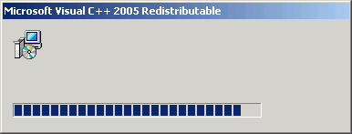
2. Выбираем куда устанавливать программу и расположение данных:
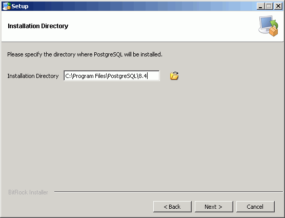
3. Указываем администраторский пароль для базы данных
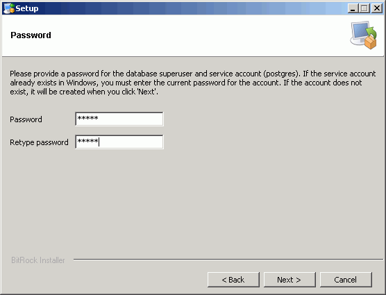
4. Выбираем порт подключения:
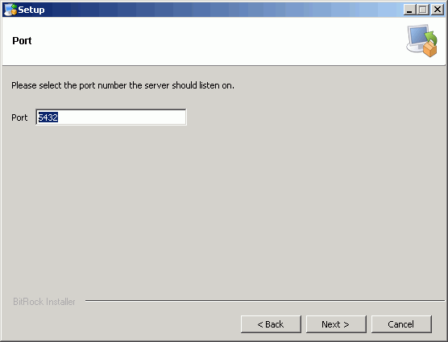
5. Выбираем локаль
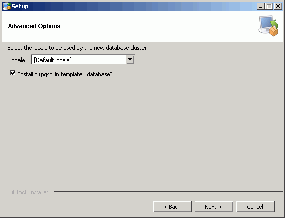
3. Мастер установки PostgreSQL сообщает о прогрессе установки.
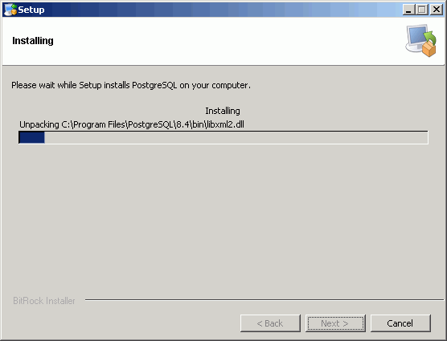
Жмем «Завершить». На этом установка PostgreSQL на ваш компьютер завершена!
Если вы хотите установить PostGIS сразу после завершения установки PostgreSQL, поставьте галку на запуске Stack Builder.
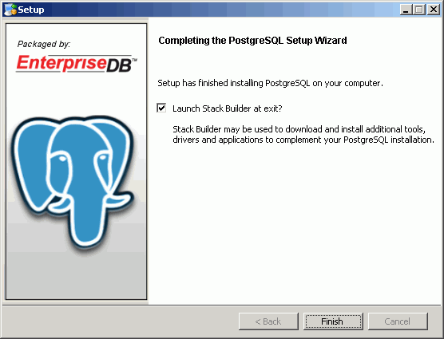
Установку PostGIS можно осуществить полуавтоматически через Stack Builder и непосредственно скачав пакет PostGIS. Способы установки отличаются лишь методом получения установщика PostGIS. В первом случае Stack Builder запустится сам: «Пуск/PostgreSQL 8.4/Приложение Stack Builder».
1. Выберите установленный сервер:

2. Из пункта Spatial Extensions выберите PostGIS 1.4:
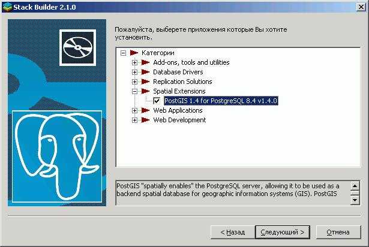
Далее вам осталось только выбрать зеркало загрузки в временную папку, в которую будет загружен дистрибутив.
Если вы решили скачать установщик PostGIS самостоятельно, то последнюю версию PostGIS можно скачать на сайте http://postgis.refractions.net. Скачиваем последнюю на момент написания статьи версию PostGIS для работы с PostgreSQL 8.4 – PostGIS -1.4 с pgfoundry.
Ход установки:
1. Запускаем файл postgis-pg84-setup-1.4.0-2.exe или более свежий:
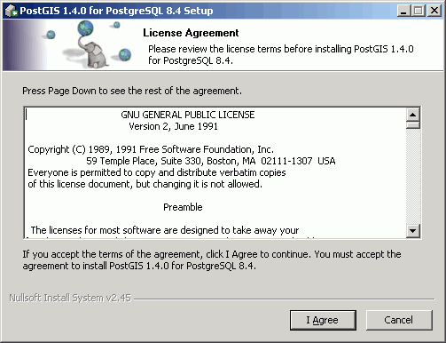
2. Снимаем отметку с пункта «Create spatial database». «Create spatial database» позволяет создать пространственную базу данных автоматически. Далее мы будем рассматривать процесс создания такой базы данных вручную, не прибегая к услугам установщика PostGIS, поэтому на данном этапе мы отметку с этого пункта снимем.
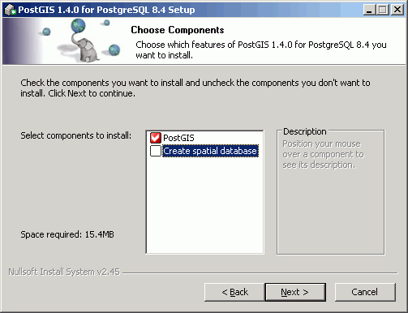
3. Выбираем путь для установки.
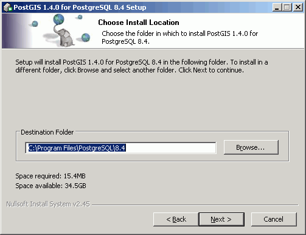
4. Заполняем представленные поля:
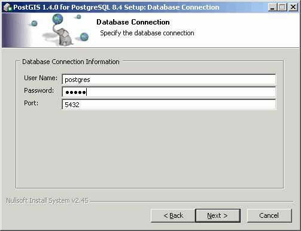
В поле Password вводим пароль указанный выше и жмем «Next» для завершения установки. На этом установка PostGIS завершена!
 Создание пространственной базы данных
Создание пространственной базы данных
Существует два способа создания пространственной базы данных: с использованием шаблона и без. В данном разделе мы рассмотрим оба этих способа.
Создание базы данных с использованием шаблона:
1. В меню Пуск находим PostgreSQL 3 и запускаем pgAdmin III.
2. В браузере объектов дважды щелкаем на «PostgreSQL Database Server 8.3». Будет предложено ввести пароль суперпользователя для подключения к выбранному серверу, что мы и делаем.
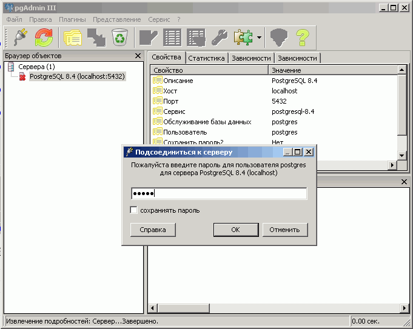
3. В браузере объектов выбираем «Базы» и открываем «Правка/Новый объект/Новая база данных…». Устанавливаем имя новой базы данных – «postgis», владелец – «postgres», шаблон – «template_postgis». Используя шаблон базы данных «template_postgis», мы тем самым создаем базу данных с пространственным расширением.
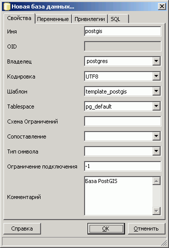
4. Открываем список таблиц созданной базы данных: «postgis/схемы/public/Таблицы». Вы должны увидеть две стандартные таблицы: «geometry_columns» и «spatial_ref_sys», созданные PostGIS.
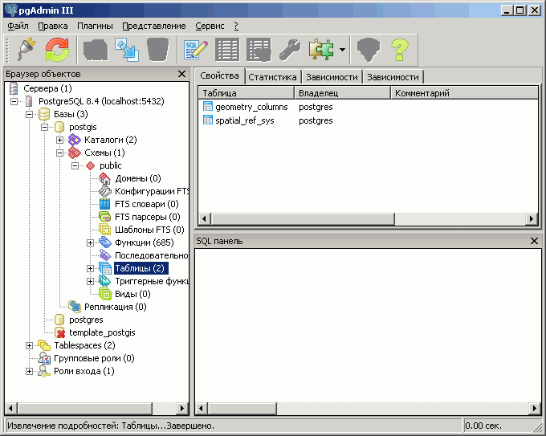
На этом процесс создания пространственной базы данных с использованием шаблона закончен.
Создание базы данных без использования шаблона:
Если ваша база данных не содержит шаблон «template_postgis», то вы можете загрузить PostGIS вручную, вызвав два скрипта SQL, которые установят функции и типы PostGIS.
1. В pgAdmin откройте окно запросов SQL (щелкнув на кнопку с изображением карандаша):
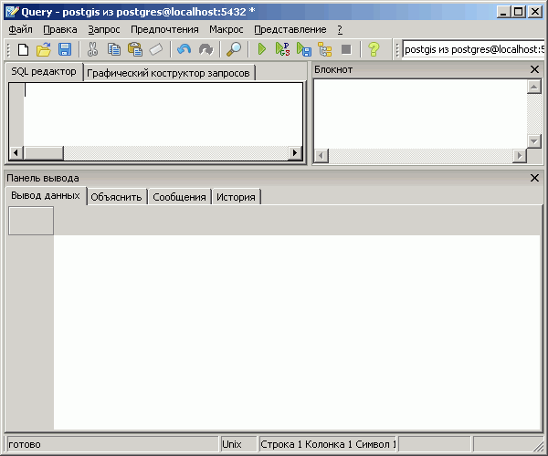
2. Выберите «Файл/Открыть...» и откройте файл:
C:\Program Files\PostgreSQL\8.4\share\contrib\postgis.sql
3. Нажмите кнопку «Выполнить запрос» (кнопка с изображением зеленого треугольника). Файл lwpostgis.sql будет исполнен - функции и объекты PostGIS будут загружены в базу данных.
4. Выберите «Файл/Открыть...» и откройте файл:
C:\Program Files\PostgreSQL\8.4\share\contrib\spatial_ref_sys.sql
5. Нажмите кнопку «Выполнить запрос» (кнопка с изображением зеленого треугольника). Файл spatial_ref_sys.sql будет исполнен, загрузив параметры систем координат в формате EPSG в таблицу базы данных.
Процесс создания пространственной базы данных без использования шаблона окончен. Таким образом, на данный момент времени мы имеем пространственную базу данных «postgis», готовую к наполнению данными.
Ссылки по теме
Дата создания: 06.10.2008
Автор(ы): Денис Рыков